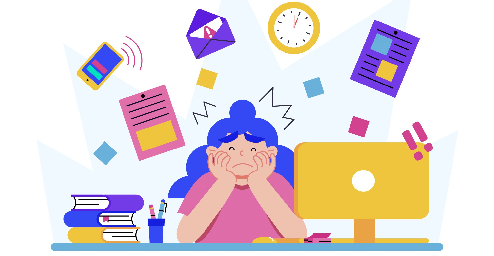
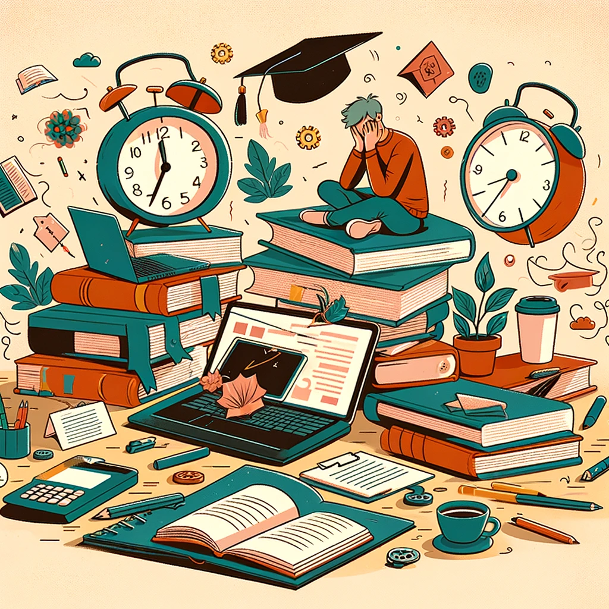
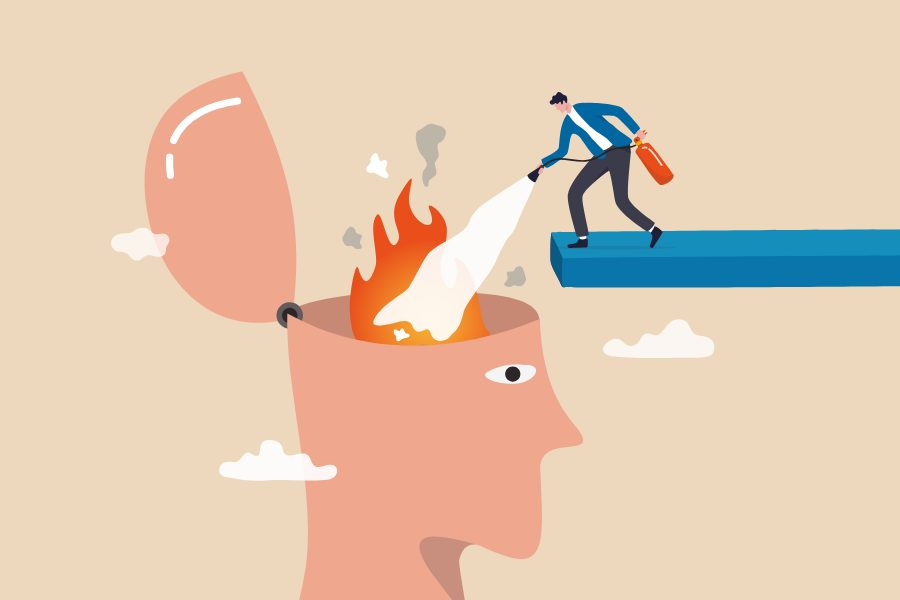

Bienvenido
El estrés es un fenómeno común en la vida de los estudiantes, especialmente durante épocas de exámenes o
cuando las demandas académicas se incrementan. Aunque el estrés puede ser visto como una respuesta natural
ante ciertos desafíos, si no se maneja adecuadamente, puede tener efectos negativos tanto en la salud física
como mental de los estudiantes.
En esta página, exploraremos cómo el estrés afecta el rendimiento académico, las principales causas que lo
generan y las posibles soluciones que pueden ayudar a los estudiantes a sobrellevarlo. A lo largo de los
diferentes apartados, abordaremos tanto aspectos científicos como consejos prácticos para mejorar el bienestar
general y evitar que el estrés impacte negativamente en la vida académica.

¿Qué es el Estrés?
El estrés es una respuesta fisiológica y psicológica a situaciones que percibimos como amenazantes o desafiantes.
En el contexto académico, esta respuesta es comúnmente activada por eventos como exámenes, proyectos, trabajos en
grupo o la carga general de estudio. Aunque una cierta cantidad de estrés puede ser útil para mantenernos enfocados
y motivados, niveles elevados o prolongados de estrés pueden tener consecuencias negativas.
En términos científicos, el estrés se activa cuando el cuerpo libera hormonas como el cortisol y la adrenalina.
Estas hormonas nos preparan para enfrentar una amenaza (la famosa respuesta de “lucha o huida”), lo cual puede
ser útil a corto plazo. Sin embargo, cuando estamos sometidos a un estrés continuo o crónico, estas mismas hormonas
pueden dañar nuestro bienestar físico y mental.
Existen dos tipos principales de estrés:
- Estrés agudo: Es el tipo de estrés que experimentamos en respuesta a un evento puntual. Por ejemplo,
antes de una prueba o una presentación importante.
- Estrés crónico: Se produce cuando el individuo está sometido a una presión constante durante largos
periodos. En el ámbito académico, puede ser el resultado de cargas de trabajo excesivas o la presión constante por
obtener buenos resultados.
En el caso de los estudiantes, el estrés agudo puede ser beneficioso, ya que ayuda a concentrarse y trabajar más rápido
bajo presión. No obstante, el estrés crónico tiende a generar problemas de salud mental, como la ansiedad, depresión e
incluso trastornos del sueño.

Causas del Estrés Académico
Las causas del estrés académico varían de un estudiante a otro, pero hay ciertos factores comunes que afectan a la
mayoría de los estudiantes. Identificar las causas es crucial para encontrar maneras efectivas de enfrentarlas.
Entre las causas más comunes del estrés en los estudiantes encontramos:
- Exámenes: Los exámenes generan gran ansiedad debido a la presión por obtener buenas calificaciones.
Los estudiantes a menudo sienten que sus habilidades y esfuerzos están siendo evaluados en un corto periodo de tiempo,
lo que aumenta la presión.
- Fechas límite estrictas: Los proyectos y trabajos académicos suelen tener plazos ajustados, lo que
puede causar tensión cuando varios trabajos coinciden en fechas de entrega cercanas.
- Falta de tiempo: Muchos estudiantes experimentan una falta de tiempo para equilibrar su vida social,
actividades extracurriculares y obligaciones académicas. Esto crea una sensación de estar "ahogados" por el trabajo.
- Expectativas de otros: La presión de padres, profesores o compañeros para obtener buenos resultados
académicos puede hacer que el estudiante sienta que su valor personal está directamente relacionado con su rendimiento
académico.
- Procrastinación: Retrasar las tareas puede llevar a la acumulación de responsabilidades, lo que
aumenta el estrés al tener que completarlas bajo presión de tiempo.
- Competencia académica: En algunos entornos educativos, los estudiantes compiten entre sí por
obtener los mejores puestos o calificaciones, lo que añade otra capa de presión.
Otros factores como los problemas personales, la falta de sueño y el mal manejo del tiempo también pueden contribuir a
elevar los niveles de estrés. Todos estos factores combinados pueden llevar a una situación de estrés crónico si no
se gestionan adecuadamente.

Efectos del Estrés en el Rendimiento Académico
El estrés puede tener efectos perjudiciales tanto en el rendimiento académico como en la salud física y emocional de los
estudiantes. A continuación, se detallan algunos de los efectos más comunes que el estrés tiene sobre los estudiantes:
- Bajo rendimiento académico: Los estudiantes estresados pueden tener dificultades para concentrarse,
lo que afecta su capacidad para retener información y desempeñarse bien en exámenes y tareas. Esto puede llevar a una
disminución en las calificaciones.
- Falta de concentración y memoria: El estrés afecta la capacidad de atención y la memoria de trabajo,
lo que hace que sea más difícil recordar lo que se ha estudiado.
- Fatiga mental y física: Los niveles elevados de estrés pueden llevar al agotamiento, afectando la
energía y el enfoque del estudiante.
- Ansiedad: El estrés continuo puede derivar en episodios de ansiedad, lo que a su vez empeora el
rendimiento académico y aumenta la preocupación y el miedo al fracaso.
- Problemas de sueño: El estrés altera los ciclos de sueño, haciendo que los estudiantes tengan
dificultades para descansar adecuadamente. El sueño insuficiente afecta directamente la capacidad de concentración y
el estado de ánimo.
- Problemas emocionales y físicos: Además de los problemas académicos, el estrés prolongado puede
causar dolores de cabeza, problemas estomacales y aumentar el riesgo de padecer trastornos emocionales como la
depresión.
El estrés no solo afecta el desempeño académico, sino que también puede afectar negativamente la autoestima y la
motivación, creando un círculo vicioso en el que el estudiante se siente incapaz de mejorar su situación.

Soluciones y Estrategias para Reducir el Estrés
Existen varias estrategias que los estudiantes pueden aplicar para manejar el estrés y mejorar su bienestar general.
La clave está en la organización, el cuidado personal y en encontrar un equilibrio entre las responsabilidades
académicas y el tiempo libre.
Algunas soluciones efectivas para reducir el estrés incluyen:
- Planificación y organización: Mantener un calendario detallado de tareas y exámenes puede
ayudar a los estudiantes a distribuir mejor su tiempo y evitar el estrés de última hora. El uso de herramientas
como agendas o aplicaciones móviles puede ser de gran ayuda.
- División de tareas: Dividir grandes proyectos en partes más manejables ayuda a evitar la
procrastinación y reduce la sobrecarga.
- Ejercicio físico: El ejercicio regular es una excelente forma de reducir el estrés, ya que libera
endorfinas, las hormonas que mejoran el estado de ánimo y reducen el estrés.
- Técnicas de relajación: La meditación, el yoga y las técnicas de respiración profunda son
métodos eficaces para calmar la mente y reducir el estrés.
- Descanso adecuado: Dormir entre 7 y 9 horas diarias es crucial para que el cerebro procese
correctamente la información y se mantenga en un estado óptimo de funcionamiento.
- Tiempo libre: Es importante que los estudiantes se permitan momentos de descanso y ocio.
Participar en actividades recreativas o sociales ayuda a despejar la mente y mejorar el estado emocional.
- Apoyo social: Hablar con amigos, familiares o consejeros sobre las preocupaciones académicas puede
ser una forma eficaz de aliviar el estrés. A veces, compartir los problemas ayuda a ver las cosas con más claridad.
Implementar estas estrategias no solo ayudará a reducir el estrés, sino que también mejorará el rendimiento académico
y la calidad de vida en general. Los estudiantes deben recordar que el bienestar emocional es tan importante como
el rendimiento académico, y encontrar un equilibrio saludable es la clave para alcanzar el éxito.